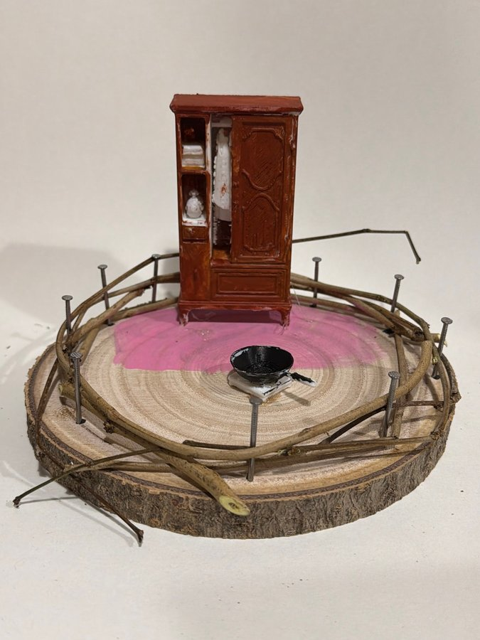

修正版頂視圖同實景相互相吻合：深啡色衣櫃靠後，前方大片粉紅色地氈／塗色區，中央偏前有一隻黑色廚具鍋；圓木底外圍由枝條同釘圍住。實景亦見衣櫃左格有白色小物。黑色鍋下面似有白色墊同幼支架，至於係煎鍋、煮食鍋定象徵擺設，單靠相片未能完全確定。
巢嘅頂視圖
修正版頂視圖同實景相互相吻合：深啡色衣櫃靠後，前方大片粉紅色地氈／塗色區，中央偏前有一隻黑色廚具鍋；圓木底外圍由枝條同釘圍住。實景亦見衣櫃左格有白色小物。黑色鍋下面似有白色墊同幼支架，至於係煎鍋、煮食鍋定象徵擺設，單靠相片未能完全確定。
屋企嘅人
畫面只有一個衣櫃同一隻鍋，冇床、座位或人物，所以居民人數無法判斷。衣櫃將衣物、白色小像同收納格集中起來，而鍋就代表另一種日常功能；可以藝術化咁想像，呢個屋企重視保存私人小物同維持簡單生活。呢啲只係由物件組合引伸，唔係對真實家庭結構嘅確認。
性格
高身深啡衣櫃畀人穩重同重視收納嘅感覺，大片粉紅地面就加入柔和、個人化嘅反差；黑鍋則保留實用生活味。枝條同釘逐段固定，反映作品有耐性同手作安排。可以將呢種組合讀成務實之中帶感情，但唔能夠由模型判定真人性格。
動機
作品似乎想用最少物件講出「保存」同「過日子」：衣櫃收藏物件，鍋處理日常，粉紅區將兩者連成一個私人範圍，外圈再加保護。衣櫃比鍋大好多，亦令收納同記憶成為視覺重心。呢個係構圖層面嘅閱讀，唔代表創作者真實動機只有一種。
需求
最直接見到嘅需要係收納同基本日常功能：衣櫃有門、有格、有白色小物，鍋則令場景連到煮食或家務。粉紅地面同枝條圍欄提供一個被劃定嘅私人區域。至於係咪需要特別安全感、懷舊或共同用餐，影像冇足夠資料，只可保留為藝術聯想。
經歷
作品可見嘅經歷包括塑造有雕花感嘅衣櫃、安排格內小物、塗出不規則粉紅地面，再用釘同枝條完成圍欄。呢啲痕跡顯示一次由收納家具開始、逐步加上日常物同邊界嘅創作過程。搬遷、臨時安頓或失去舊居都唔能夠從相片證實，唔應寫成真實生平。
證據摘要
| 物件 | 推論 |
|---|---|
| 深啡色高身衣櫃 | 場景最大物件，清楚突出收納同私人用品。 |
| 衣櫃左格白色小物 | 可見似布料、小瓶或小像，但細節不足以逐件確認。 |
| 中央偏前黑色有柄鍋 | 帶出煮食或家務聯想；亦可能係象徵擺設。 |
| 大片不規則粉紅地氈／塗色 | 將衣櫃前方標成獨立而柔和嘅區域。 |
| 圓木底、銀色釘同交錯枝條 | 實際承托並圍住模型，建立內外界線。 |
信心同限制
實景相同修正版對衣櫃、粉紅區、黑鍋同位置描述大致一致，所以佈局觀察信心較高。限制係黑鍋實際用途、衣櫃內小物種類同居民資料全部未知；單一斜角亦遮住部分底面。所有關於性格、動機、需要同經歷嘅內容都係藝術詮釋，非身份、社會學、心理或臨床定性。